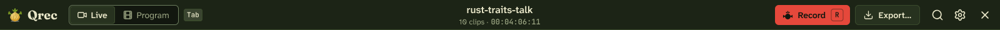
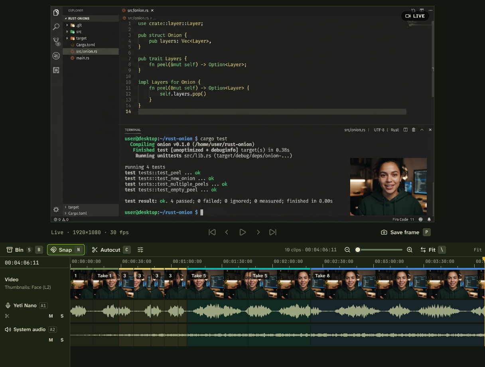
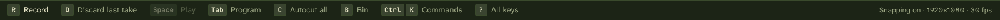

Right screen · DP-2 isn't connected
LIVE
Switched to Two screens. DP-2 isn't connected.
Its layer stays in the scene, and new takes record without it until it's back or you replace it.
Replace screen…
Undo